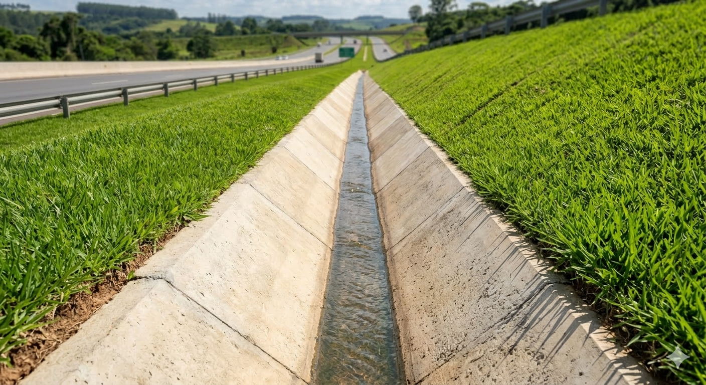
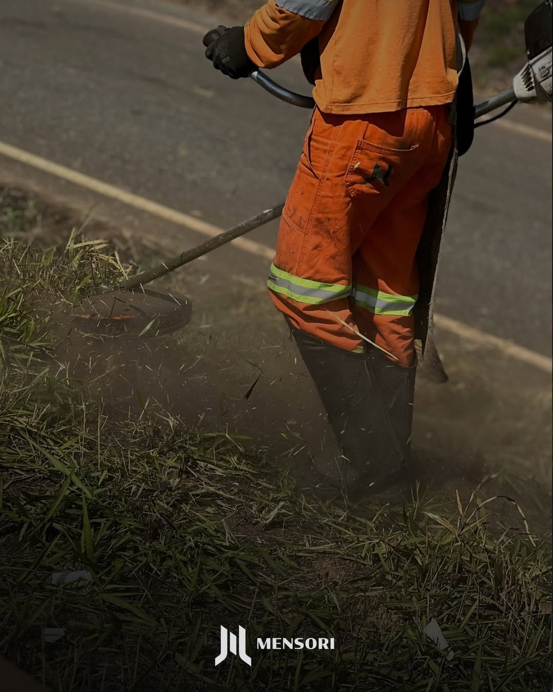

Inteligência que preserva a vida e o patrimônio rodoviário.

Controle de biomassa, prevenção de incêndios e manutenção rigorosa de sistemas de drenagem.
Segurança viária passiva e valorização da mão de obra das comunidades lindeiras.
Transparência total com relatórios georreferenciados e conformidade técnica absoluta.

Mato baixo e bueiros limpos não são apenas estética. Uma faixa de domínio bem cuidada evita infiltrações que destroem a base do asfalto e garante que o motorista enxergue cada placa de sinalização.
Saiba MaisConservados
Conformidade
Mão de Obra Local